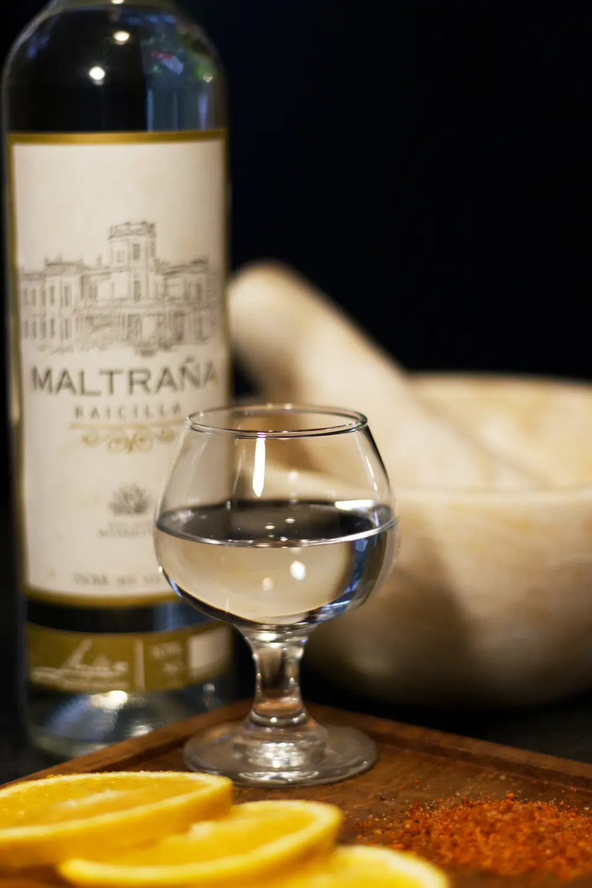

Raicilla

¿Qué es la raicilla?
La raicilla es un destilado artesanal de agave originario de Jalisco, México, protegido por la Denominación de Origen Raicilla que reconoce su autenticidad y su vínculo con el territorio. Elaborada mediante métodos tradicionales, ofrece una amplia diversidad de perfiles aromáticos y sabores que reflejan la riqueza de su origen.
Su historia se remonta al periodo colonial y está profundamente ligada a las comunidades rurales de la Sierra Occidental y la Costa de Jalisco, donde generaciones de productores han preservado los conocimientos y técnicas de su elaboración.
Hoy, la raicilla representa una expresión singular de la tradición destiladora mexicana y una categoría con identidad propia dentro del universo de los destilados de agave, con un atractivo especial para los mercados especializados y premium.

Nuestro proceso de elaboración
-
Todo comienza con la selección de agaves Maximiliana silvestres, maduros, de entre 12 y 16 años, que crecen a más de 1,200 metros de altitud y nacen de semilla. Una vez jimados con coa, los llevamos a nuestra taberna, Casa Maltraña.
-
Las piñas se cuecen durante 72 horas en hornos de piedra calentados con leña. Antes de introducirlas, retiramos la leña y las cenizas para conservar el carácter silvestre del agave, con un delicado toque ahumado.
-
Después de la cocción, el agave se machaca artesanalmente con mazos de madera y se deposita en barricas para su fermentación natural, que toma entre 7 y 14 días, dependiendo del clima, sin añadir aceleradores.
-
El mosto se destila una sola vez, separando cuidadosamente cabezas, corazones y colas para obtener el corazón del destilado: la esencia de nuestra raicilla.
-
Finalmente, el destilado reposa durante tres meses en recipientes de vidrio, en un espacio oscuro, para estabilizarse antes de ser embotellado, etiquetado y lacrado.
Cada botella de Maltraña es única, numerada y trazable por lote.
Lleva el alma de cada horneada y la firma de nuestro maestro raicillero.